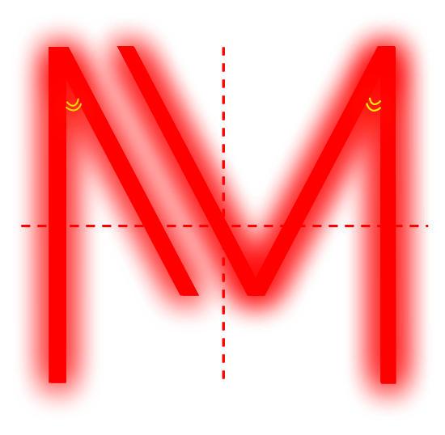

LIGHTS. CAMERA. MONOTON.
M


Monoton
Monoton was designed by Vernon Adams, a designer who experimented with typeface between 2007 and 2014. During this time, Adams released Monoton, in addition to well-known open-source fonts including Oswald, Pacifico, and Oxygen. (Monoton). Monoton is a contemporary take on Prisma, a metalpress font that has a similar retro style. Monoton has a distinctive “Old Hollywood” flair that calls to mind the bright lights and theater district characteristic of big cities.